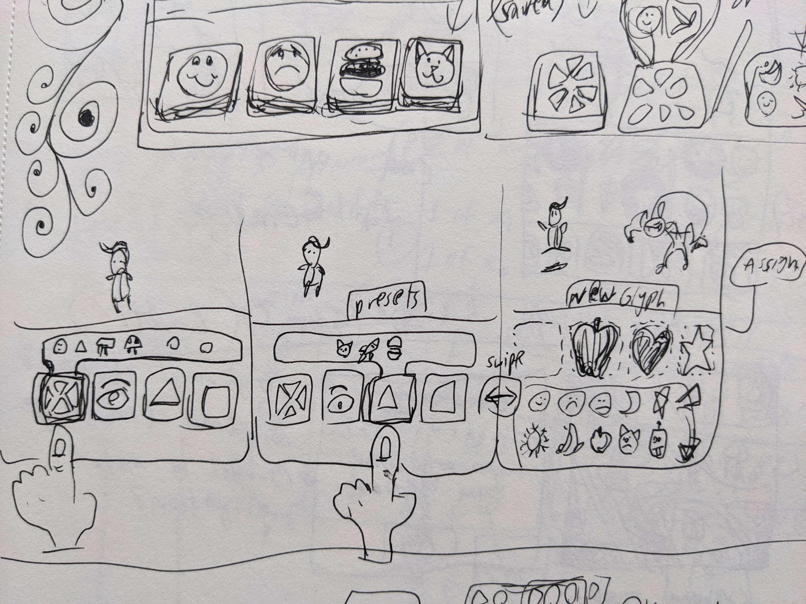
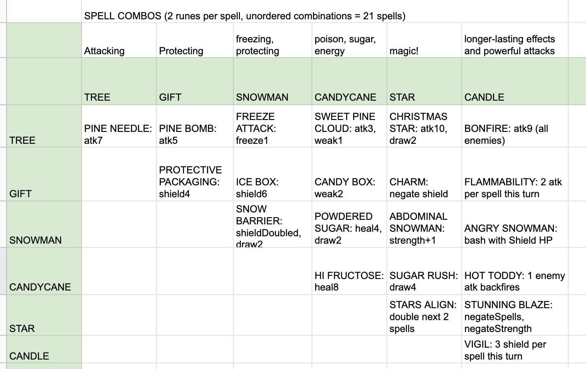

Game / Strategy
Winter Wizard Battle
Combine runes to cast spells in the strategy prototype that led to Spelly Forest.

Project overview
Back in 2020 I had been turning over an inkling of a game idea in my head for a long time. That winter I decided to prototype it and create a small game for family and friends - I figured it would be a good way to get validation on the idea, and see if it had legs. I also had a goal of learning a game engine, and chose the HTML5 engine Phaser.
Prototyping gave me the confidence that the idea was a good core dynamic to expand upon, and confidence in myself as a game developer. Shortly after this project, I picked up where I'd left off learning Unity, and launched into making Spelly Forest, a much larger, ongoing project.
Tools Phaser, Typescript, VS Code, Itch.io asset store
Prototyping

- Sticking to a winter/holiday theme was perfect for narrowing both the thematic elements, and restricting the timeline of the project since it wouldn't make sense for me to send people a holiday game in the middle of spring. I wanted to test out a game dynamic, and challenge myself to do it quickly.
- I also planned to use only off-the-shelf art and assets, and completely avoid adding any sound. This allowed me to focus most of the time on implementation and tweaking the core game dynamic.
- The final timeline of the project ended up being a little over a month. The project accomplished its goals - I sent it to everyone I knew, got a lot of positive feedback and started to feel like I could actually make games!
Game Design

- The core dynamic I wanted to explore was "making combinations of basic elements to cast spells". I was inspired by the spell system in Eternal Darkness, where you have the freedom to just try new combinations (which might accidentally summon zombies). I also loved the cooking system in Breath of the Wild, the sense of discovery and total freedom that went along with it.
- My original idea from years ago involved casting spells by combining different emojis. With a winter theme, the specific emojis (I started calling them "Runes") were very predetermined: tree, gift box, star, etcetera.
- The most challenging yet fun part of the design was deciding what "flavor" each combination of runes had, and what the effects of that spell should be:

- I limited the number of rune types to 6, since that generates 21 two-rune combos.
- A lot of design elements were ripped off of Slay the Spire, one of my favorite games at the time. As such, the game started to take a roguelike-deckbuilding direction, even though I had originally envisioned the game as more of an RPG.
- The reason I wholesale-grafted certain game dynamics from Slay the Spire was the same reason I used only pre-made assets: I wanted to save my focus for the main "nugget" I was interested in exploring.
- I love the format of Slay the Spire because you end up with a wildly different deck every run, and since the options and battles are randomized, you never know exactly what to expect. My Holiday game was just a sequence of battles, after each of which, you got to pick a new rune and learn a new spell combination.
- The game had only a few enemies, and there wasn't even a real boss; the enemies just kept scaling up in health and damage until you died, or the game ran out of enemies and you won.
Learning Game Dev

- At the time I was working as a web developer, but I badly wanted to start learning how to make games. The HTML5 game engine Phaser had been on my radar for a while, and this was the perfect time to start learning it!
- I discovered not only was my previous coding experience and web experience applicable to game dev, but that it actually gave me a huge head-start! Getting the first scene up and running was simple and fun, since Phaser is easy to learn for beginners, yet also very feature-rich.
- Also, now that I'm using Unity for gamedev, I can safely say with hindsight that my time with Phaser was a great intro to game engines. In the same way that my web experience translated easily into using Phaser, my Phaser learnings dovetailed into learning Unity. I've found this to be true in general in my development journey: no learning is wasted, because old knowledge often applies to new things in unexpected ways.
Static Typing

- I've been a huge fan of Typescript for a long time - the refactorability, readability, and just general sanity that it brings to the Javascript landscape is amazing. Thinking in types upgraded my coding chops in many ways. Plus, it's become somewhat of a lingua franca among the web dev community.
- I made type definitions for almost every moving part of this prototype - including the game state, the objects passed around by the event system, and the serialization used for saving the game.
- Although it was a little work up front to define all these things, it helped me avoid so many errors that could have come up had I used plain Javascript.